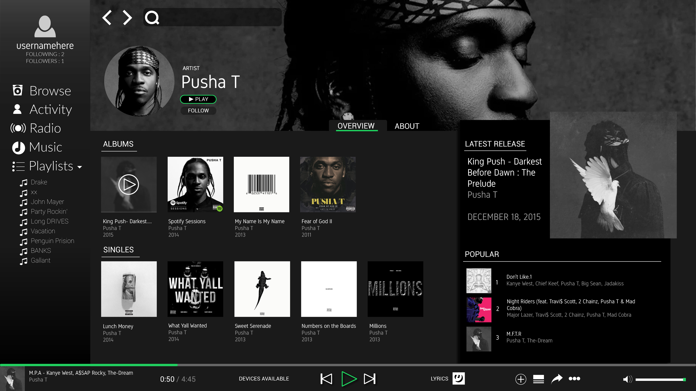
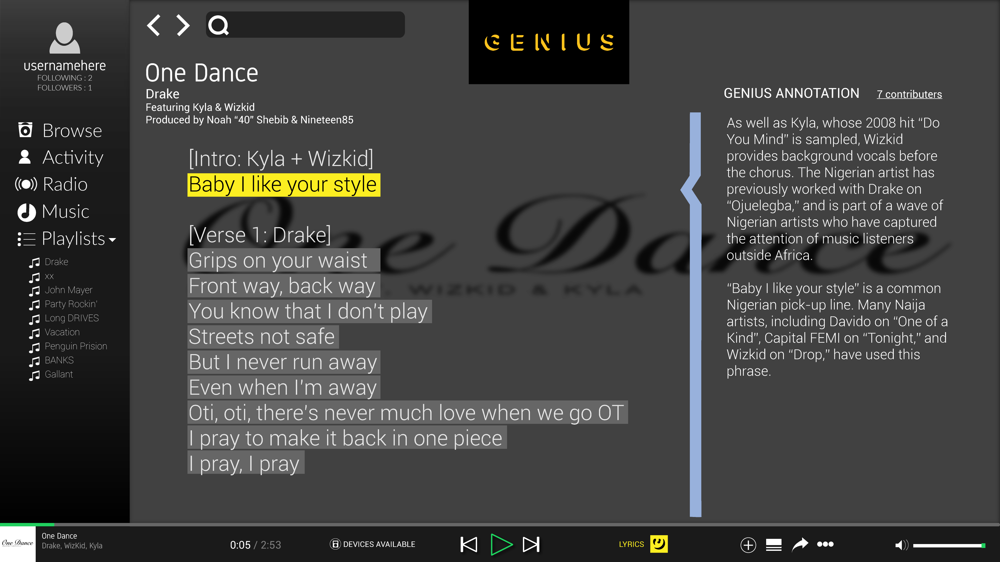
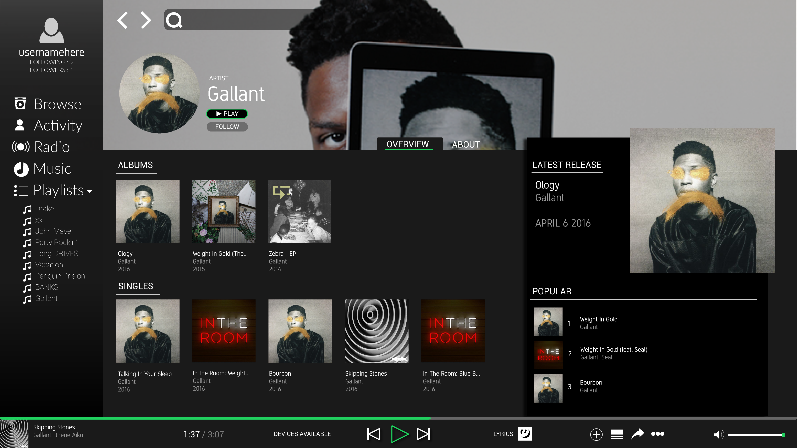

Typography:
The Spotify design is way overdue for a typeface change. Clean typefaces are used in my redesign concept: Gidole Regular, Lato, and Roboto.
Genius Integration:
Genius is a lyric annotation application that allows users to annotate lyrics with meanings, background info, and more. It’s a great way to take your music to the next level. The Genius mobile app on iOS and Android sync with your currently playing Spotify track to deliver you their service with whatever you happen to be listening to. Bringing it to the desktop and getting rid of Musixmatch lyrics integration would really give Spotify a stand out feature compared to competitors like Apple Music.

Google Material Design Influences:
Material design influenced "card" carries artist info at a glance. Upsized album art highlights latest releases, and the standard "popular" track list is at your side. The design choices here really try to emphasize having more information in your view. Album covers are smaller, and information is clustered closer, yet highly visual. This is in contrast to the current design - which gives you limited artist discography in your initial view.
